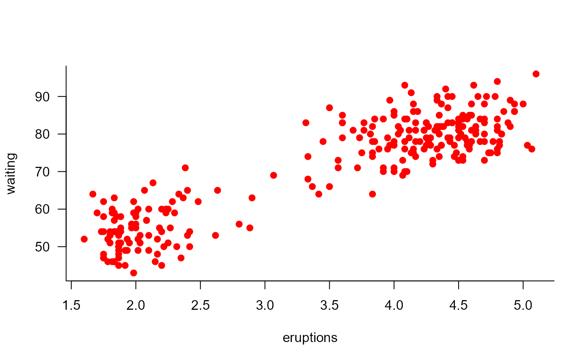

Print examples of chapter 16 of 'R for Dummies'.
ch16.RdTo print a listing of all examples of a chapter, use ch16().
To run all the examples of ch16(), use example(ch16).
ch16()
See also
toc
Other Chapters: ch01, ch02,
ch03, ch04,
ch05, ch06,
ch07, ch08,
ch09, ch10,
ch11, ch12,
ch13, ch14,
ch15, ch17,
ch18, ch19,
ch20
Examples
# Chapter 16 - Using Base Graphics # Creating Different Types of Plots ## Getting an overview of plot large.islands <- head(sort(islands, decreasing=TRUE), 10) plot(large.islands, main="Land area of continents and islands", ylab="Land area in square miles")#> [1] "white" "aliceblue" "antiquewhite" "antiquewhite1" #> [5] "antiquewhite2" "antiquewhite3" "antiquewhite4" "aquamarine" #> [9] "aquamarine1" "aquamarine2"# Controlling Plot Options and Arguments ## Adding titles and axis labels plot(faithful, main = "Eruptions of Old Faithful", xlab = "Eruption time (min)", ylab = "Waiting time to next eruption (min)")### Font size of text and axes x <- seq(0.5, 1.5, 0.25) y <- rep(1, length(x)) plot(x, y, main="Effect of cex on text size")plot(x, y, main="Effect of cex.main, cex.lab and cex.axis", cex.main=1.25, cex.lab=1.5, cex.axis=0.75)## Putting multiple plots on a single page old.par <- par(mfrow=c(1, 2)) plot(faithful, main="Faithful eruptions") plot(large.islands, main="Islands", ylab="Area")# NOT RUN { png(filename=filename) # }plot(faithful)# NOT RUN { dev.off() # }